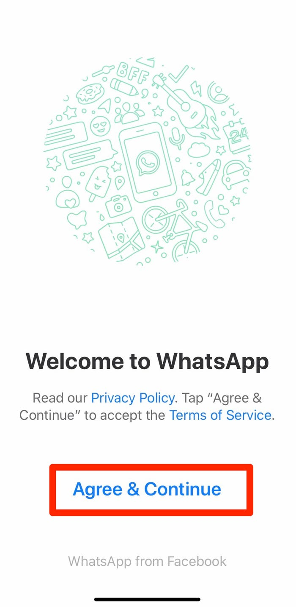
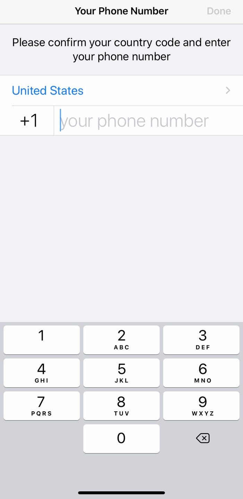
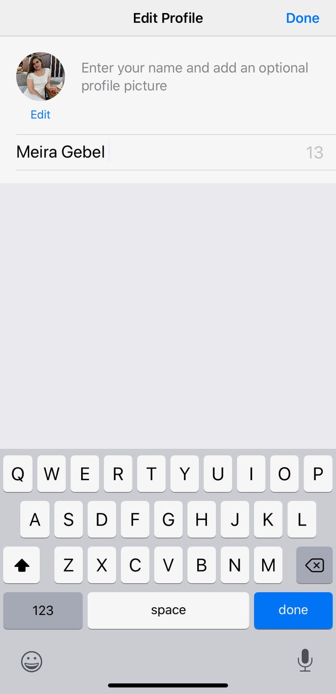

Step 1:
When you open the app for the first time you will be greeted with a welcome screen. Select “Agree & Continue” to sign up.
Step 2:
Next you will be asked to type in your mobile number. Make sure the country code is set to “+44” if you are in the UK. This can be changed by tapping on the country and selecting United Kingdom from the list. Tap “done” or “next” to continue to the next step.
Step 3:
You will then receive a message from WhatsApp to verify your phone number. This will be a 6 digit code. To finish signing up, enter the code. If you haven’t received a code, you can request WhatsApp to resend the code or you can request a call to finish the sign up process.
Step 4:
You will then be asked to enter your name to finish setting up your profile. You can also add a profile picture if you wish but this isn’t necessary. WhatsApp will then request permission to access your contacts. Tap “allow”. This will let you see which of your contacts are already using WhatsApp.